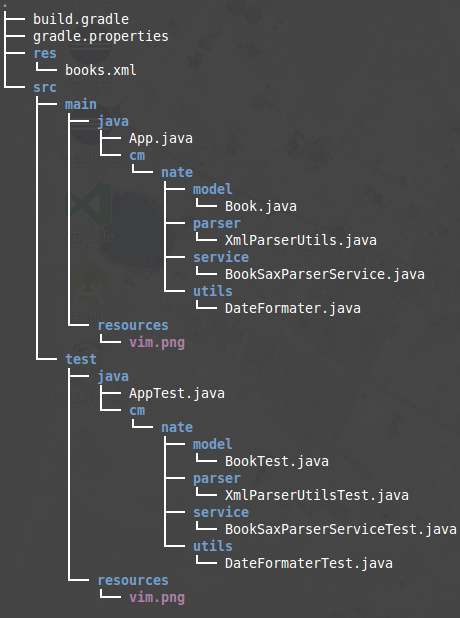

Apache Commons包含了很多开源的工具，致力于创建和维护可重用Java组件。
Apache Commons项目由三部分组成：
项目主页 -- commons.apache.org
The Commons Proper:
| 组件 | 描述 |
| BCEL | 字节码工程库——分析，创建和操纵Java类文件 |
| BeanUtils | 易于使用的Java反射和内省API |
| BSF | Bean脚本框架 - 包括脚本语言接口，以及JSR-223 |
| Chain | 责任链模式实现 |
| CLI | 命令行参数解析器 |
| Codec | 常用的编码/解码算法（例如：语音，base64，URL） |
| Collections | 扩展或增强Java集合框架 |
| Compress | 为处理tar,zip，zbip2等文件定义的一些接口 |
| Configuration | 读取各种格式的配置/首选项文件 |
| Crypto | 一个加密库，使用 AES-NI (Advanced Encryption Standard New Instructions) 进行优化。提供了加密级别和流级别的 API |
| CSV | 读取和写入逗号分隔值文件的组件 |
| Daemon | 可以帮你实现将一个普通的 Java 应用变成系统的一个后台服务 |
| DBCP | 数据库线程池服务 |
| DbUtils | JDBC助手库 |
| Digester | XML到Java对象的映射工具 |
| Discovery | 通过将服务名称及引用名称映射为资源名称来查找资源的工具 |
| 通过Java发送邮件的库 | |
| Exec | Java中处理外部进程执行和环境管理的API用于 |
| FileUpload | 在servlet和Web application中添加文件上传的功能 |
| Functor | Apache Commons Functor 库包括大量基本构造,可以在涉及闭包和高阶函数的复杂使用场景中重复使用 |
| Imaging | 纯Java的图像库 |
| IO | I / O工具集 |
| JCI | Java 编译器接口 |
| JCS | Java缓存系统 |
| Jelly | 基于XML的脚本和处理引擎 |
| Jexl | 表达式语言，它扩展了JSTL的表达式语言 |
| JXPath | 使用XPath语法操作Java bean的实用工具包 |
| Lang | java.lang中的类提供额外的功能 |
| Launcher | 跨平台的Java应用程序启动 |
| Logging | 各种日志API的实现的包装器 |
| Math | 轻量，无依赖的数学和统计组件 |
| Modeler | 提供符合JMX规范的，用于创建Model Mbeans的机制 |
| Net | 网络工具和协议的实现集合 |
| OGNL | OGNL是Object-Graph Navigation Language的缩写，它是一种功能强大的表达式语言，通过它简单一致的表达式语法，可以存取对象的任意属性，调用对象的方法，遍历整个对象的结构图，实现字段类型转化等功能。它使用相同的表达式去存取对象的属性。 |
| Pool | 通用对象池组件 |
| Proxy | 创建动态代理的包 |
| RNG | 随机数生成器的实现 |
| SCXML | 有限状态机XML规范的实现，目的是为了创建和维护Java的SCXML引擎。它能够执行一个使用SCXML文档定义的的状态机，及抽象出环境的接口 |
| Validator | 通过XML文件定义验证器和验证规则的框架 |
| VFS | VFS把对各种各样的的文件系统的访问封装成统一的应用程序接口，这大大的简化了应用程序本身代码的复杂度。Apache上的项目的稳定性也是有目共睹的，目前VFS支持下面一些文件系统，当然你也可以自行进行扩展。如FTP,SMB,ZIP或者单个逻辑文件系统 |
| Weaver | 提供了一种简单的方法来增强(织)编译后的字节码 |
说明：这个工具包可以看成是对java.lang的扩展。提供了诸如StringUtils, StringEscapeUtils, RandomStringUtils, Tokenizer, WordUtils等工具类。
jar包 -- commons-lang3-3.5.jar
文档 -- apidocs
常用类:
StringUtils / WordUtils
-- 主要提供对字符串 / 单词的操作
/** StringUtils */
System.out.println("将字符串重复n次，将文字按某宽度居中，将字符串数组用某字符串连接.");
String[] header = new String[3];
header[0] = StringUtils.repeat("*", 50);
header[1] = StringUtils.center(" StringUtilsDemo ", 50, "^O^");
header[2] = header[0];
String head = StringUtils.join(header, "\n");
System.out.println(head);
System.out.println("缩短到某长度,用...结尾.");
System.out.println(StringUtils.abbreviate(
"The quick brown fox jumps over the lazy dog.", 10));
System.out.println(StringUtils.abbreviate(
"The quick brown fox jumps over the lazy dog.", 15, 10));
System.out.println("返回两字符串不同处索引号.");
System.out.println(StringUtils.indexOfDifference("aaabc", "aaacc"));
System.out.println("返回两字符串不同处开始至结束.");
System.out.println(StringUtils.difference("aaabcde", "aaaccde"));
System.out.println("截去字符串为以指定字符串结尾的部分.");
System.out.println(StringUtils.chomp("aaabcde", "de"));
System.out.println("检查一字符串是否为另一字符串的子集.");
System.out.println(StringUtils.containsOnly("aad", "aadd"));
System.out.println("检查一字符串是否不是另一字符串的子集.");
System.out.println(StringUtils.containsNone("defg", "aadd"));
System.out.println("检查一字符串是否包含另一字符串.");
System.out.println(StringUtils.contains("defg", "ef"));
System.out.println(StringUtils.containsOnly("ef", "defg"));
System.out.println("返回可以处理null的toString().");
System.out.println(StringUtils.defaultString("aaaa"));
System.out.println("?" + StringUtils.defaultString(null) + "!");
System.out.println("去除字符中的空格.");
System.out.println(StringUtils.deleteWhitespace("aa bb cc"));
System.out.println("分隔符处理成数组.");
String[] strArray = StringUtils.split("a,b,,c,d,null,e", ",");
System.out.println(strArray.length);
System.out.println(strArray.toString());
System.out.println("判断是否是某类字符.");
System.out.println(StringUtils.isAlpha("ab"));
System.out.println(StringUtils.isAlphanumeric("12"));
System.out.println(StringUtils.isBlank(""));
System.out.println(StringUtils.isNumeric("123"));
/** WordUtils */
String str1 = "wOrD";
String str2 = "ghj\nui\tpo";
System.out.println(WordUtils.capitalize(str1)); // 首字母大写
System.out.println(WordUtils.capitalizeFully(str1)); // 首字母大写其它字母小写
char[] ctrg = { '.' };
System.out.println(WordUtils.capitalizeFully("i aM.fine", ctrg)); // 在规则地方转换
System.out.println(WordUtils.initials(str1)); // 获取首字母
System.out.println(WordUtils.initials("Ben John Lee", null)); // 取每个单词的首字母
char[] ctr = { ' ', '.' };
System.out.println(WordUtils.initials("Ben J.Lee", ctr)); // 按指定规则获取首字母
System.out.println(WordUtils.swapCase(str1)); // 大小写逆转
System.out.println(WordUtils.wrap(str2, 1)); // 解析\n和\t等字符
ObjectUtils
--
主要是对null进行安全处理,可以设置为null时的默认返回值,比较相等时是调用对象的equals方法,因此需要对对象进行方法进行覆盖
System.out.println("Object为null时，默认打印某字符.");
Object obj = null;
System.out.println(ObjectUtils.defaultIfNull(obj, "空"));
System.out.println("验证两个引用是否指向的Object是否相等,取决于Object的equals()方法.");
Object a = new Object();
Object b = a;
Object c = new Object();
System.out.println(ObjectUtils.equals(a, b));
System.out.println(ObjectUtils.equals(a, c));
System.out.println("用父类Object的toString()方法返回对象信息.");
Date date = new Date();
System.out.println(ObjectUtils.identityToString(date));
System.out.println(date);
System.out.println("返回类本身的toString()方法结果,对象为null时，返回0长度字符串.");
System.out.println(ObjectUtils.toString(date));
System.out.println(ObjectUtils.toString(null));
System.out.println(date);
SystemUtils
-- 主要获取一些系统属性,例如工作目录等等
System.out.println("获得系统文件分隔符.");
System.out.println(SystemUtils.FILE_SEPARATOR);
System.out.println("获得源文件编码.");
System.out.println(SystemUtils.FILE_ENCODING);
System.out.println("获得ext目录.");
System.out.println(SystemUtils.JAVA_EXT_DIRS);
System.out.println("获得java版本.");
System.out.println(SystemUtils.JAVA_VM_VERSION);
System.out.println("获得java厂商.");
System.out.println(SystemUtils.JAVA_VENDOR);
ClassUtils
-- 类相关操作
System.out.println("获取类实现的所有接口.");
System.out.println(ClassUtils.getAllInterfaces(Date.class));
System.out.println("获取类所有父类.");
System.out.println(ClassUtils.getAllSuperclasses(Date.class));
System.out.println("获取简单类名.");
System.out.println(ClassUtils.getShortClassName(Date.class));
System.out.println("获取包名.");
System.out.println(ClassUtils.getPackageName(Date.class));
System.out.println("判断是否可以转型.");
System.out.println(ClassUtils.isAssignable(Date.class, Object.class));
System.out.println(ClassUtils.isAssignable(Object.class, Date.class));
DateUtils / CalendarUtils / StopWatch
-- 对日期的操作,包括日期加减,日期格式化,日期比较,一定时间范围内日期的迭代提供,秒表的计时,暂停等功能
System.out.println("格式化日期输出.");
System.out.println(DateFormatUtils.format(System.currentTimeMillis(),
"yyyy-MM-dd HH:mm:ss"));
System.out.println("秒表.");
StopWatch sw = new StopWatch();
sw.start();
for (Iterator iterator = DateUtils.iterator(new Date(),
DateUtils.RANGE_WEEK_CENTER); iterator.hasNext();) {
Calendar cal = (Calendar) iterator.next();
System.out.println(DateFormatUtils.format(cal.getTime(), "yy-MM-dd HH:mm"));
}
sw.stop();
System.out.println("秒表计时:" + sw.getTime());
SerializationUtils
-- 序列化相关操作
System.out.println("*SerializationUtils**");
Date date = new Date();
byte[] bytes = SerializationUtils.serialize(date);
System.out.println(ArrayUtils.toString(bytes));
System.out.println(date);
Date reDate = (Date) SerializationUtils.deserialize(bytes);
System.out.println(reDate);
System.out.println(ObjectUtils.equals(date, reDate));
System.out.println(date == reDate);
FileOutputStream fos = null;
FileInputStream fis = null;
try {
fos = new FileOutputStream(new File("./test/test.txt"));
fis = new FileInputStream(new File("./test/test.txt"));
SerializationUtils.serialize(date, fos);
Date reDate2 = (Date) SerializationUtils.deserialize(fis);
System.out.println(date.equals(reDate2));
} catch (FileNotFoundException e) {
e.printStackTrace();
} finally {
try {
fos.close();
fis.close();
} catch (IOException e) {
e.printStackTrace();
}
}
ToStringBuilder / HashCodeBuilder / EqualsBuilder
-- 提供了方便的方法来覆盖toString, equals() 和hashCode()方法
public class BuildDemo {
String name;
int age;
public BuildDemo(String name, int age) {
this.name = name;
this.age = age;
}
public String toString() {
ToStringBuilder tsb = new ToStringBuilder(this,
ToStringStyle.MULTI_LINE_STYLE);
tsb.append("Name", name);
tsb.append("Age", age);
return tsb.toString();
}
public int hashCode() {
HashCodeBuilder hcb = new HashCodeBuilder();
hcb.append(name);
hcb.append(age);
return hcb.hashCode();
}
public boolean equals(Object obj) {
if (!(obj instanceof BuildDemo)) {
return false;
}
BuildDemo bd = (BuildDemo) obj;
EqualsBuilder eb = new EqualsBuilder();
eb.append(name, bd.name);
eb.append(age, bd.age);
return eb.isEquals();
}
}
public void builderDemo() {
BuildDemo obj1 = new BuildDemo("a", 1);
BuildDemo obj2 = new BuildDemo("b", 2);
BuildDemo obj3 = new BuildDemo("a", 1);
System.out.println("toString()");
System.out.println(obj1);
System.out.println(obj2);
System.out.println(obj3);
System.out.println("hashCode()");
System.out.println(obj1.hashCode());
System.out.println(obj2.hashCode());
System.out.println(obj3.hashCode());
System.out.println("equals()");
System.out.println(obj1.equals(obj2));
System.out.println(obj1.equals(obj3));
}
ArrayUtils
-- 提供了数组的复制,查找,获取子数组,反转等功能
/*** 1. ArrayUtils.isEmpty(strs) : 判断数组是否为空 , 不为空返回false,为空true */
ArrayUtils.isEmpty(new String[] { "21", "是" });// 结果是false
ArrayUtils.isEmpty(new String[] { "" });// 结果是false
ArrayUtils.isEmpty(new String[] {});// 结果是true
/** 2. ArrayUtils.isNotEmpty(strs) : 判断数组是否不为空 , 不为空返回true,为空false */
ArrayUtils.isNotEmpty(new String[] { "21", "是" }); // 结果是true
ArrayUtils.isNotEmpty(new String[] { "" });// 结果是true
ArrayUtils.isNotEmpty(new String[] {});// 结果是false
/**
* 3. ArrayUtils.isSameLength(strs, strs2) : 判断两个数组长度是否相等,
* 长度相等返回true,否则返回false 。相比较的两个数组类型必须相同
*/
ArrayUtils.isSameLength(new String[] { "21", "是" }, new String[] { "21", "是" });// 返回false
/**
* 4. ArrayUtils.isSameType(strs, strs2)
* :判断两个数组的类型是否相同,相同返回true,否则返回false
*/
ArrayUtils.isSameType(new String[] { "21", "是" }, new Integer[] { 3 });
/** 5. ArrayUtils.isEquals(strs, strs2) 判断两个数组是否相等 */
ArrayUtils.isEquals(strs, strs);// 结果是true
/** 6. ArrayUtils.toString() 将一个数组转换成String,用于打印 */
ArrayUtils.toString(new String[] { "21", "是" });// 结果是：{21,是}
/** 7. ArrayUtils.clone 赋值 （克隆） 数组 */
Object[] s = ArrayUtils.clone(new Object[] { "33", "yy" });
/**
* 8. ArrayUtils.subarray 截取 子数组 ： 根据 起始索引 startIndexInclusive 到
* 结束索引startIndexInclusive
*/
Object[] s1 = ArrayUtils.subarray(new Object[] { "33", "yy", "uu" }, 0, 1);// 结果是返回数组 ：[33]
Object[] s2 = ArrayUtils.subarray(new Object[] { "33", "yy", "uu" }, 0, 2);// 结果是返回数组 ：[33, yy]
/** 9. ArrayUtils.indexOf 查询某个object在数组中的位置，可是指定起始搜索位置 */
int index = ArrayUtils.indexOf(new Object[] { "33", "yy", "uu" }, "uu");// 结果是2
int index1 = ArrayUtils.indexOf(new Object[] { "33", "yy", "uu" }, "uu", 2);// 结果是2
int index3 = ArrayUtils.indexOf(new Object[] { "33", "yy", "uu" }, "uu", 3);// 结果是-1
/** 10. ArrayUtils.lastIndexOf 反向查询某个object在数组中的位置 可是指定起始搜索位置 */
int index11 = ArrayUtils.lastIndexOf(new Object[] { "33", "yy", "uu" }, "33");// 结果是0
int index22 = ArrayUtils.lastIndexOf(new Object[] { "33", "yy", "uu" }, "33", 2);
/** 11. ArrayUtils.contains 查询某个object是否在数组中 */
/** 12. ArrayUtils.reverse 反转数组 */
ArrayUtils.reverse(new String[] { "22", "yy" });// 结果是：{"yy"，"22"}
/** 13. ArrayUtils.add 添加一object到数组 */
String[] t = { "22", "yy" };
String[] gg = (String[]) ArrayUtils.add(t, "jj");// {"22","yy","jj"}
/** 14. ArrayUtils.addAll 合并两个数组 */
String[] ggo = (String[]) ArrayUtils.addAll(
new String[] { "22", "yy" }, new String[] { "jj" });// 结果是：[22, // yy, jj]
/** 15. ArrayUtils.remove 删除数组某个位置的元素 */
String[] gg4 = (String[]) ArrayUtils.remove( new String[] { "22", "yy" }, 1);
/** 16. ArrayUtils.removeElement 删除数组中某个对象 */
String[] ggpp = (String[]) ArrayUtils.removeElement(new String[] { "22", "yy" }, "yy");
说明：各种日志API的实现的包装器。common-logging是apache提供的一个通用的日志接口。用户可以自由选择第三方的日志组件作为具体实现，像log4j，或者jdk自带的logging， common-logging会通过动态查找的机制，在程序运行时自动找出真正使用的日志库。当然，common-logging内部有一个Simple logger的简单实现，但是功能很弱。所以使用common-logging，通常都是配合着log4j来使用。使用它的好处就是，代码依赖是common-logging而非log4j， 避免了和具体的日志方案直接耦合，在有必要时，可以更改日志实现的第三方库。
jar包 -- commons-logging-1.2.jar
文档 -- apidocs
日志等级分为以下６种:
关于配置
commons-logging.propertyies
,
simplelog.properties
或
log4j.properties
文件的位置，如果是在eclipse中直接运行，位置是
src
目录下，eclipse 自动将其复制到
bin
目录；如果打成jar包，请将配置文件一起打包到jar包的根目录下；web项目位于
web-inif/classes
目录下；配置文件默认从class位置根目录读取。
commons-logging.propertyies
文件:
# 使用 SimpleLog org.apache.commons.logging.Log=org.apache.commons.logging.impl.SimpleLog # 使用 Jdk14Logger # org.apache.commons.logging.Log=org.apache.commons.logging.impl.Jdk14Logger # 使用 Log4JLogger # org.apache.commons.logging.Log=org.apache.commons.logging.impl.Log4JLogger
simplelog.propertyies
文件:
# 日志等级 "trace", "debug", "info", "warn", "error", "fatal" org.apache.commons.logging.simplelog.defaultlog=debug # 是否显示 log级别名字 org.apache.commons.logging.simplelog.showlogname=false # 是否使用 log级别短名字 org.apache.commons.logging.simplelog.showShortLogname=false # 是否显示时间 org.apache.commons.logging.simplelog.showdatetime=true # 时间格式控制 org.apache.commons.logging.simplelog.dateTimeFormat=yyyy-MM-dd hh:mm:ss
log4j.propertyies
文件配置看下节: --
log4j.propertyies
说明：Apache的开源项目log4j是一个功能强大的日志组件,提供方便的日志记录。此项目不属于commons组件。
jar包 -- apache-log4j-1.2.17.jar
文档 -- apidocs
log4j简介
Log4j有三个主要的组件：Loggers(记录器)，Appenders (输出源)和Layouts(布局)。Log4j有一个规则：只输出级别不低于设定级别的日志信息，假设Loggers级别设定为INFO，则INFO、WARN、ERROR和FATAL级别的日志信息都会输出，而级别比INFO低的DEBUG则不会输出。
Logger之间是具有java的继承特性的。Log4j有一个rootLogger，所有普通logger都默认继承rootLogger。而普通logger之间的继承关系是通过logger name来实现的。
比如，叫"com.foo.Bar"名字的logger就继承于叫"com.foo"名字的logger。就好像java中"java.util" 和"java.util.Vector"的关系一样。
commons-logging.propertyies
文件:
# 使用 Log4JLogger org.apache.commons.logging.Log=org.apache.commons.logging.impl.Log4JLogger
log4j.propertyies
文件配置:
# log4j.rootLogger=OFF 关闭log4j
# 配置根Logger
log4j.rootLogger=[LEVEL], console, message, error
# LEVEL为日志级别(从低到高): DEBUG - INFO - WARN - ERROR - FATAL
# console, message, error 都是自己的 appender 名字
# 配置 appender
log4j.appender.console=org.apache.log4j.ConsoleAppender
# org.apache.log4j.ConsoleAppender（控制台）
# Threshold=WARN：指定日志信息的最低输出级别，默认为DEBUG
# ImmediateFlush=true：表示所有消息都会被立即输出，设为false则不输出，默认值是true
# Target=System.err：默认值是System.out
# org.apache.log4j.FileAppender（文件）
# Threshold=WARN：指定日志信息的最低输出级别，默认为DEBUG
# ImmediateFlush=true：表示所有消息都会被立即输出，设为false则不输出，默认值是true
# Append=false：true表示消息增加到指定文件中，false则将消息覆盖指定的文件内容，默认值是true
# File=./logs/logging.log4j：指定消息输出到logging.log4j文件中
# org.apache.log4j.DailyRollingFileAppender（每天产生一个日志文件）
# Threshold=WARN：指定日志信息的最低输出级别，默认为DEBUG
# ImmediateFlush=true：表示所有消息都会被立即输出，设为false则不输出，默认值是true
# Append=false：true表示消息增加到指定文件中，false则将消息覆盖指定的文件内容，默认值是true
# File=./logs/logging.log4j：指定当前消息输出到logging.log4j文件中
# DatePattern='.'yyyy-MM：每月滚动一次日志文件，即每月产生一个新的日志文件。
# 当前月的日志文件名为logging.log4j，前一个月的日志文件名为logging.log4j.yyyy-MM。
# 另外，也可以指定按周、天、时、分等来滚动日志文件，对应的格式如下
# 1)'.'yyyy-MM：每月
# 2)'.'yyyy-ww：每周
# 3)'.'yyyy-MM-dd：每天
# 4)'.'yyyy-MM-dd-a：每天两次
# 5)'.'yyyy-MM-dd-HH：每小时
# 6)'.'yyyy-MM-dd-HH-mm：每分钟
# org.apache.log4j.RollingFileAppender（文件大小到达指定尺寸的时候产生一个新的文件）
# Threshold=WARN：指定日志信息的最低输出级别，默认为DEBUG
# ImmediateFlush=true：表示所有消息都会被立即输出，设为false则不输出，默认值是true
# Append=false：true表示消息增加到指定文件中，false则将消息覆盖指定的文件内容，默认值是true
# File=./logs/logging.log4j：指定消息输出到logging.log4j文件中
# MaxFileSize=100KB：后缀可以是KB, MB 或者GB。在日志文件到达该大小时，将会自动滚动，
# 即将原来的内容移到logging.log4j.1文件中
# MaxBackupIndex=2：指定可以产生的滚动文件的最大数，
# 例如，设为2则可以产生logging.log4j.1，logging.log4j.2两个滚动文件和一个logging.log4j文件
# org.apache.log4j.WriterAppender（将日志信息以流格式发送到任意指定的地方）
# 配置 appender layout
log4j.appender.console.layout=org.apache.log4j.PatternLayout
# org.apache.log4j.HTMLLayout（以HTML表格形式布局）
# LocationInfo=true：输出java文件名称和行号，默认值是false
# Title=My Logging： 默认值是Log4J Log Messages
# org.apache.log4j.PatternLayout（可以灵活地指定布局模式）
# ConversionPattern=%m%n：设定以怎样的格式显示消息
# %p：输出日志信息的优先级，即DEBUG，INFO，WARN，ERROR，FATAL。
# %d：输出日志时间点的日期或时间，默认格式为ISO8601，也可以在其后指定格式，
# 如：%d{yyyy/MM/dd HH:mm:ss,SSS}。
# %r：输出自应用程序启动到输出该log信息耗费的毫秒数。
# %t：输出产生该日志事件的线程名。
# %l：输出日志事件的发生位置，相当于%c.%M(%F:%L)的组合，包括类全名、方法、文件名以及在代码中的行数。
# 例如：test.TestLog4j.main(TestLog4j.java:10)。
# %c：输出日志信息所属的类目，通常就是所在类的全名。
# %M：输出产生日志信息的方法名。
# %F：输出日志消息产生时所在的文件名称。
# %L:：输出代码中的行号。
# %m:：输出代码中指定的具体日志信息。
# %n：输出一个回车换行符，Windows平台为"\r\n"，Unix平台为"\n"。
# %x：输出和当前线程相关联的NDC(嵌套诊断环境)，尤其用到像java servlets这样的多客户多线程的应用中。
# %%：输出一个"%"字符。
# 另外，还可以在%与格式字符之间加上修饰符来控制其最小长度、最大长度、和文本的对齐方式。如：
# 1) c：指定输出category的名称，最小的长度是20，如果category的名称长度小于20的话，默认的情况下右对齐。
# 2) %-20c："-"号表示左对齐。
# 3) %.30c：指定输出category的名称，最大的长度是30，如果category的名称长度大于30的话，
# 就会将左边多出的字符截掉，但小于30的话也不会补空格。
# org.apache.log4j.SimpleLayout（包含日志信息的级别和信息字符串）
# org.apache.log4j.TTCCLayout（包含日志产生的时间、线程、类别等等信息）
example
# 配置根Logger log4j.rootLogger=DEBUG, console, message, error # 为 com.release 包配置专门的Logger log4j.logger.com.release=DEBUG, release # 控制台输出内容 log4j.appender.console=org.apache.log4j.ConsoleAppender log4j.appender.console.layout=org.apache.log4j.PatternLayout log4j.appender.console.Threshold=DEBUG log4j.appender.console.layout.ConversionPattern=[ %m ] %p %r %l %n # 信息输出文件 log4j.appender.message=org.apache.log4j.FileAppender log4j.appender.message.layout=org.apache.log4j.PatternLayout log4j.appender.message.Threshold=INFO log4j.appender.message.layout.ConversionPattern=[ %m ] %p %r %l %n log4j.appender.message.File=./logs/info.log4j # 错误输出文件 log4j.appender.error=org.apache.log4j.FileAppender log4j.appender.error.layout=org.apache.log4j.PatternLayout log4j.appender.error.Threshold=ERROR log4j.appender.error.Append=false log4j.appender.error.layout.ConversionPattern=[ %m ] %p %r %l %n log4j.appender.error.File=./logs/error.log4j # com.release包下使用这个 log4j.appender.release=org.apache.log4j.FileAppender log4j.appender.release.layout=org.apache.log4j.PatternLayout log4j.appender.release.Threshold=INFO log4j.appender.release.layout.ConversionPattern=[ %m ] %p %r %l %n log4j.appender.release.File=./logs/release.log4j
说明： JUnit 是一个 Java 语言的单元测试框架，有它自己的 JUnit 扩展生态圈。多数 Java 的开发环境都已经集成了 JUnit 作为单元测试的工具。
JUnit 是一个开放源代码的 Java 测试框架，用于编写和运行可重复的测试。JUnit 提供以下功能：
JUnit 的特点:
JUnit是用于编写和运行测试的开源框架。
提供了注释，以确定测试方法。
提供断言测试预期结果。
提供了测试运行的运行测试。
JUnit测试让您可以更快地编写代码，提高质量
JUnit是优雅简洁。它是不那么复杂以及不需要花费太多的时间。
JUnit测试可以自动运行，检查自己的结果，并提供即时反馈。没有必要通过测试结果报告来手动梳理。
JUnit测试可以组织成测试套件包含测试案例，甚至其他测试套件。
Junit显示测试进度的，如果测试是没有问题条形是绿色的，测试失败则会变成红色。
JAR 包 -- JUnit-4.12.jar
JUnit-4.12 依赖 hamcrest-1.3 版本 -- hamcrest-core-1.3.jar 和 hamcrest-library-1.3.jar
文档 -- apidocs
在 Gradle 中使用 JUnit 测试
使用 Gradle 构建的 Java项目，结构如右图所示：
1. 在
build.gradle
文件中加入
junit-4.12
依赖
apply plugin: 'java'
apply plugin: 'application'
// 为 application 插件指定运行主类
mainClassName = 'App'
// 使用 jcenter 仓库
repositories {
jcenter()
}
// 加入 junit-4.12 库依赖
dependencies {
testCompile 'junit:junit:4.12'
}
// 生成的 jar 包 manefest 文件加入运行主类和作者信息
jar {
manifest {
attributes 'Main-Class': 'App'
attributes 'author': author
attributes 'mail': mail
}
}

2. 在
src/test/java
目录编写相关测试类。
package cm.nate.parser;
import java.io.File;
import java.io.FileInputStream;
import java.util.ArrayList;
import javax.xml.parsers.SAXParser;
import javax.xml.parsers.SAXParserFactory;
import org.xml.sax.SAXException;
import cm.nate.model.Book;
import cm.nate.service.BookSaxParserService;
public class XmlParserUtils {
/**
* 此类从 res/books.xml 文件中读取 book 信息
*/
public static ArrayList<Book> getBooks(String xmlPath) {
if(null == xmlPath || "".equals(xmlPath)) {
return null;
}
File xml = new File(xmlPath);
if(!xml.exists() || xml.isDirectory()) {
return null;
}
SAXParserFactory factory = SAXParserFactory.newInstance();
SAXParser parser = null;
BookSaxParserService handler;
try {
parser = factory.newSAXParser();
handler = new BookSaxParserService();
parser.parse(new FileInputStream(xml), handler);
} catch (Exception e) {
e.printStackTrace();
return null;
}
ArrayList<Book> list = handler.getBooks();
return list;
}
}
package cm.nate.parser;
import cm.nate.model.Book;
import java.util.ArrayList;
// 静态导入 Assert 类的方法
import static org.junit.Assert.*;
import org.junit.Test;
public class XmlParserUtilsTest {
@Test // 使用 Test 注解
public void testGetBooks() {
assertNull(XmlParserUtils.getBooks(null)); // 参数为 null 测试
assertNull(XmlParserUtils.getBooks("")); // 参数为空测试
assertNull(XmlParserUtils.getBooks("res/")); // 参数为目录测试
assertNull(XmlParserUtils.getBooks("res/not-exist.xml")); // 文件不存在测试
assertNotNull(XmlParserUtils.getBooks("res/books.xml")); // 一切正常测试
}
}
3. 直接运行
$ gradle test
, 如果测试通过，打开
build/reports/tests/test/index.html
文件，可以看到生成的测试报告。
Assert 类的一些方法： -- 详情参数 API 文档: Assert
assertNull(Object object)
-- 检查对象是空的
assertNotNull(Object object)
-- 检查对象不是空的
assertTrue(boolean condition)
-- 检查条件为 true
assertFalse(boolean condition)
-- 检查条件为 false
assertEquals(Object expected, Object actual)
-- 检查是否 equals
assertNotEquals(Object expected, Object actual)
-- 检查是否不 equals
fail
-- 在没有报告的情况下使测试不通过
fail((String message))
-- 使测试不通过并生成一条消息
JUnit 4 中常用注解:
@Test
-- @Test 注解的 public void 方法将会被当做测试用例，JUnit 每次都会创建一个新的测试实例，然后调用
@Test 注解方法，任何异常的抛出都会认为测试失败。
/**
* @Test 注解提供 2 个参数：
* 1. expected -- 定义测试方法应该抛出的异常，如果测试方法没有抛出异常或者抛出了一个不同的异常，测试失败
* 2. timeout -- 如果测试运行时间长于该定义时间，测试失败（单位为毫秒）
*/
@Test(expected=Exception.class)
public void testAdd() throws Exception {
throw new Exception();
}
@Test(timeout=5000)
public void testAdd() {
while(true) {}
}
@Before
-- 使用 @Before 注解一个 public void 方法会使该方法在 @Test
注解方法被执行前执行（那么就可以在该方法中创建相同的对象）
@After
-- 使用 @After 注解一个 public void 方法会使该方法在 @Test 注解方法执行后被执行, 即使在
@Before 注解方法、@Test 注解方法中抛出了异常，所有的 @After 注解方法依然会被执行
@BeforeClass
-- 使用 @BeforeClass 注解一个 public static void
方法，并且该方法不带任何参数，会使该方法在所有测试方法被执行前执行一次，并且只执行一次
@AfterClass
-- 使用 @AfterClass 注解一个 public static void
方法会使该方法在测试类中的所有测试方法执行完后被执行, 即使在 @BeforeClass 注解方法中抛出了异常，所有的
@AfterClass 注解方法依然会被执行
@Ignore
-- 对包含测试类的类或 @Test 注解方法使用 @Ignore
注解将使被注解的类或方法不会被当做测试执行，相当于放弃对类或 @Test 标示方法的测试。
说明：Apache Commons Collections是一个用来处理集合Collection的开源工具包，比如你可以用来将一个对象拷贝多份并存放到一个Bag对象中（这个看来没有多大用处），得到两个集合里相同的元素，删除一个集合里的元素并返回删除的元素，还有除了通过一个集合里的key得到value外，还可以通过value 得到key，也就是说这个集合里的value是唯一的，另外还可以将一个集合里的key和value值对调，得到一个集合里的某一key之后的另一个 key值等等。
jar包 -- commons-collections4-4.1.jar
文档 -- apidocs
根据集合类型，大致将此包的类归纳为9类：
Bag -- 在org.apache.commons.collections包中定义的接口，它extends java.util.Collection，而它的实现类都被放在下面的bag包中。HashBag是Bag接口的一个标准实现。而BagUtils提供一组static的方法让调用者获取经过不同装饰后的Bag实例.具体用法见代码样例
public class Book {
private String name;
private String isbn;
private double retailPrice;
public Book() {}
public Book(String name, String isbn, double retailPrice) {
this.name = name;
this.isbn = isbn;
this.retailPrice = retailPrice;
}
public String toString() {
return new ToStringBuilder(this, ToStringStyle.MULTI_LINE_STYLE)
.append("name", name)
.append("ISBN", isbn)
.append("retailPrice", retailPrice)
.toString();
}
public String getIsbn() {
return isbn;
}
public void setIsbn(String isbn) {
this.isbn = isbn;
}
public String getName() {
return name;
}
public void setName(String name) {
this.name = name;
}
public double getRetailPrice() {
return retailPrice;
}
public void setRetailPrice(double retailPrice) {
this.retailPrice = retailPrice;
}
}
// data setup
Book book1 = new Book("Refactoring Workbook", "7-5083-2208-8", 29.8);
Book book2 = new Book("J2EE Design Patterns", "7-5083-3099-4", 45);
Book book3 = new Book("Agile Software Development", "7-5083-1503-0", 59);
// create a bag
Bag myBag = BagUtils.typedBag(new HashBag(), Book.class);
myBag.add(book1, 360); //Bag, add 360 book1s into myBag
myBag.add(book2, 500); //Bag,add function
myBag.add(book3, 170); //Bag,add function
// calculations for a bag
double price1 = book1.getRetailPrice();
double price2 = book2.getRetailPrice();
double price3 = book3.getRetailPrice();
int book1Count = myBag.getCount(book1);//the count should be 360
int book2Count = myBag.getCount(book2);//the count should be 500
int book3Count = myBag.getCount(book3);//the count should be 170
double totalValue = (price1 * book1Count) + (price2 * book2Count) + (price3 * book3Count);
// dispaly results
System.out.println("There are " + book1Count + " copies of " + book1.getName() + ".");
System.out.println("There are " + book2Count + " copies of " + book2.getName() + ".");
System.out.println("There are " + book3Count + " copies of " + book3.getName() + ".");
System.out.println("The total value of these books is: " + totalValue);
Buffer -- 定义在org.apache.commons.collections包下面的接口，用于表示按一定顺序除去成员对象的collection如队列等。具体的 实现类在org.apache.commons.collections.buffer 包下可以找到。最简单直接的Buffer实现类是 UnboundedFifoBuffer，提供先进先出的大小可变的队列。而 BoundedFifoBuffer则是对其大小进行了限制，是固定大小的先进先出队列。 BlockingBuffer要在多线程的环境中才能体现出它的价值，尤其是当我们需要实现某种流水线时这个BlockingBuffer很有用：每个流水线上的组件从上游的BlockingBuffer获取数据，处理后放到下一个BlockingBuffer中依次传递。BlockingBuffer的核心特色通俗点说就是如果你向它要东西，而它暂时还没有的话，你可以一直等待直至拿到为止。 PriorityBuffer则提供比一般的先进先出Buffer更强的控制力：我们可以自定义Comparator给它，告诉它怎么判定它的成员的先后顺序，优先级最高的最先走。此外还有执行类型检查的 TypedBuffer、或者不可改变的 UnmodifiableBuffer等等
// data setup
Book book1 = new Book("Refactoring Workbook", "7-5083-2208-8", 29.8);
Book book2 = new Book("J2EE Design Patterns", "7-5083-3099-4", 45);
Book book3 = new Book("Agile Software Development", "7-5083-1503-0", 59);
Book book4 = new Book("Professional JSP", "7-5053-8005-2", 100);
// create a Buffer
Buffer buffer =
BufferUtils.typedBuffer(new BoundedFifoBuffer(3), Book.class); //key line1
buffer.add(book1);
buffer.add(book2);
buffer.add(book3);
Book removed = (Book) buffer.remove();//key line2
System.out.println("Removed:");
System.out.println(removed);
buffer.add(book4);//key line3
// get items in buffer
for (int i = 0; i < 3; i++) {
System.out.println(buffer.get());
buffer.remove();
}
Map -- 在java.util.Map的基础上扩展的接口和类。 BidiMap，直译就是双向Map，可以通过key找到value，也可以通过value找到key，这在我们日常的代码-名称匹配的时候很方便：因为我们除了需要通过代码找到名称之外，往往也需要处理用户输入的名称，然后获取其代码。需要注意的是BidiMap当中不光key不能重复，value也不可以。 MultiMap，就是说一个key不在是简单的指向一个对象，而是一组对象，add()和remove()的时候跟普通的Map无异，只是在get()时返回一个Collection，利用MultiMap，我们就可以很方便的往一个key上放数量不定的对象，也就实现了一对多。 LazyMap，意思就是这个Map中的键/值对一开始并不存在，当被调用到时才创建。
public static void demoBidiMap() {
System.out.println(StringUtils.center(" demoBidiMap ", 40, "="));
BidiMap bidiMap = new DualHashBidiMap();
bidiMap.put("BJ", "Beijing");
bidiMap.put("SH", "Shanghai");
bidiMap.put("GZ", "Guangzhou");
bidiMap.put("CD", "Chengdu");
System.out.println("Key-Value: BJ = " + bidiMap.get("BJ"));
System.out.println("Value-Key: Chengdu = " + bidiMap.getKey("Chengdu"));
System.out.println(StringUtils.repeat("=", 40));
}
public static void demoMultiMap() {
System.out.println(StringUtils.center(" demoMultiMap ", 40, "="));
MultiMap multiMap = new MultiHashMap();
multiMap.put("Sean", "C/C++");
multiMap.put("Sean", "OO");
multiMap.put("Sean", "Java");
multiMap.put("Sean", ".NET");
multiMap.remove("Sean", "C/C++");
System.out.println("Sean's skill set: " + multiMap.get("Sean"));
System.out.println(StringUtils.repeat("=", 40));
}
public static void demoLazyMap() {
System.out.println(StringUtils.center(" demoLazyMap ", 40, "="));
// borrowed from Commons Collection's Javadoc
Factory factory = new Factory() {
public Object create() {
return new Date();
}
};
Map lazy = LazyMap.decorate(new HashMap(), factory);
System.out.println(lazy.get("NOW"));
System.out.println(StringUtils.repeat("=", 40));
}
Collection -- 用也各collection之间的类型转换。典型的是 TypedCollection，它实际上的作用就是提供一个decorate方法，我们传进去一个Collection和需要的类型甄别信息java.lang.Class，它给我们创建一个全新的强类型的Collection
Comparator --
提供了一些Comparator的实现类（都在org.apache.commons.collections.comparators包下面）
BooleanComparator –
用于排序一组Boolean对象，指明先true还是先false；
ComparableComparator
–
用于排序实现了java.lang.Comparable接口的对象（我们常用的Java类如String、Integer、Date、Double、File、Character等等都实现了Comparable接口）；
ComparatorChain –
定义一组Comparator链，链中的Comparator对象会被依次执行；
FixedOrderComparator
– 用于定义一个特殊的顺序，对一组对象按照这样的自定义顺序进行排序；
NullComparator
– 让null值也可参与比较，可以设定为先null或者后null；
ReverseComparator
– 将原有的Comparator效果反转；
TransformingComparator
– 将一个Comparator装饰为具有Transformer效果的Comparator。
public class Issue {
private long id;
private String severity;
private String owner;
public Issue() {}
public Issue(long id, String severity, String owner) {
this.id = id;
this.severity = severity;
this.owner = owner;
}
public String toString() {
return new ToStringBuilder(this, ToStringStyle.SHORT_PREFIX_STYLE)
.append("id", id)
.append("severity", severity)
.append("owner", owner)
.toString();
}
public long getId() {
return id;
}
public void setId(long id) {
this.id = id;
}
public String getOwner() {
return owner;
}
public void setOwner(String owner) {
this.owner = owner;
}
public String getSeverity() {
return severity;
}
public void setSeverity(String severity) {
this.severity = severity;
}
}
// data setup
Issue[] issues = new Issue[] {
new Issue(15102, "Major", "John"),
new Issue(15103, "Minor", "Agnes"),
new Issue(15104, "Critical", "Bill"),
new Issue(15105, "Major", "John"),
new Issue(15106, "Major", "John"),
new Issue(15107, "Critical", "John"),
new Issue(15108, "Major", "Agnes"),
new Issue(15109, "Minor", "Julie"),
new Issue(15110, "Major", "Mary"),
new Issue(15111, "Enhancement", "Bill"),
new Issue(15112, "Minor", "Julie"),
new Issue(15113, "Major", "Julie")
};
// comparators setup
String[] severityOrder = {"Critical", "Major", "Minor", "Enhancement"};
Comparator severityComparator = new FixedOrderComparator(severityOrder);//key line1
ComparatorChain compChain = new ComparatorChain();//key line2
compChain.addComparator(new BeanComparator("owner"));
compChain.addComparator(new BeanComparator("severity", severityComparator));
compChain.addComparator(new BeanComparator("id"));
// sort and display
Arrays.sort(issues, compChain);//key line3
for (int i = 0; i < issues.length; i++) {
System.out.println(issues[i]);
}
Predicate -- 它以一个Object对象为参数，处理后返回一个boolean值，检验某个对象是否满足某个条件。Commons Collections也提供了一组定义好的Predicate类供我们使用，这些类都放在org.apache.commons.collections.functors包中。当然，我们也可以自定义Predicate，只要实现这个Predicate接口即可。
Predicate p1 = new InstanceofPredicate(String.class); //key line1
Predicate p2 = NotNullPredicate.getInstance(); //key line2
Predicate p3 = new Predicate() { //key line3
public boolean evaluate(Object obj) {
String str = (String) obj;
return StringUtils.isAlphanumeric(str)
&& str.length() >= 6
&& str.length() <= 10;
}
};
Predicate p4 = PredicateUtils.allPredicate(new Predicate[]{p1, p2, p3}); //key line4
String input = "ABCD1234";
Object[] raw = new Object[] {
"Is '",
input,
"' a valid input? ",
BooleanUtils.toStringYesNo(p4.evaluate(input)),
"."
};
System.out.println(StringUtils.join(raw));
Transformer -- 我们有时候需要将某个对象转换成另一个对象供另一组方法调用，而这两类对象的类型有可能并不是出于同一个继承体系的，或者说出了很基本的Object之外没有共同的父类，或者我们根本不关心他们是不是有其他继承关系，甚至就是同一个类的实例只是对我们而言无所谓，我们为了它能够被后续的调用者有意义的识别和处理，在这样的情形，我们就可以利用Transformer。除了基本的转型Transformer之外，Commons Collections还提供了Transformer链和带条件的Transformer，使得我们很方便的组装出有意义的转型逻辑。
public class Applicant {
private String name;
private int age;
private String applyFor;
public Applicant() {}
public Applicant(String name, int age, String applyFor) {
this.name = name;
this.age = age;
this.applyFor = applyFor;
}
public String toString() {
return new ToStringBuilder(this, ToStringStyle.SHORT_PREFIX_STYLE)
.append("name", name)
.append("age", age)
.append("applyFor", applyFor)
.toString();
}
public int getAge() {
return age;
}
public void setAge(int age) {
this.age = age;
}
public String getApplyFor() {
return applyFor;
}
public void setApplyFor(String applyFor) {
this.applyFor = applyFor;
}
public String getName() {
return name;
}
public void setName(String name) {
this.name = name;
}
}
public class Employee {
private String name;
private int age;
private Date dateJoined;
private String grade;
private double salary;
public Employee() {}
public Employee(String name, int age, Date dateJoined, String grade, double salary) {
this.name = name;
this.age = age;
this.dateJoined = dateJoined;
this.grade = grade;
this.salary = salary;
}
public String toString() {
return new ToStringBuilder(this, ToStringStyle.SHORT_PREFIX_STYLE)
.append("name", name)
.append("age", age)
.append("dateJoined", DateFormatUtils.format(dateJoined, "yyyy-MM-dd"))
.append("grade", grade)
.append("salary", salary)
.toString();
}
public int getAge() {
return age;
}
public void setAge(int age) {
this.age = age;
}
public Date getDateJoined() {
return dateJoined;
}
public void setDateJoined(Date dateJoined) {
this.dateJoined = dateJoined;
}
public String getGrade() {
return grade;
}
public void setGrade(String grade) {
this.grade = grade;
}
public String getName() {
return name;
}
public void setName(String name) {
this.name = name;
}
public double getSalary() {
return salary;
}
public void setSalary(double salary) {
this.salary = salary;
}
}
// data setup
Applicant[] applicants = new Applicant[] {
new Applicant("Tony", 26, "Developer"),
new Applicant("Michelle", 24, "Tester"),
new Applicant("Jack", 28, "Project Manager")
};
List appList = Arrays.asList(applicants);
// predicate setup
Predicate isDeveloper = new Predicate() {
public boolean evaluate(Object obj) {
Applicant app = (Applicant) obj;
return "Developer".equalsIgnoreCase(app.getApplyFor());
}
};
Predicate isTester = new Predicate() {
public boolean evaluate(Object obj) {
Applicant app = (Applicant) obj;
return "Tester".equalsIgnoreCase(app.getApplyFor());
}
};
Predicate isPM = new Predicate() {
public boolean evaluate(Object obj) {
Applicant app = (Applicant) obj;
return "Project Manager".equalsIgnoreCase(app.getApplyFor());
}
};
Predicate[] checkApplyFor = new Predicate[] {
isDeveloper,
isTester,
isPM
};
// transformer setup
Transformer developerTransformer = new Transformer() {
public Object transform(Object obj) {
Applicant app = (Applicant) obj;
return new Employee(
app.getName(), app.getAge(), new Date(), "E4", 2000
);
}
};
Transformer testerTransformer = new Transformer() {
public Object transform(Object obj) {
Applicant app = (Applicant) obj;
return new Employee(
app.getName(), app.getAge(), new Date(), "E4", 2000
);
}
};
Transformer pmTransformer = new Transformer() {
public Object transform(Object obj) {
Applicant app = (Applicant) obj;
return new Employee(
app.getName(), app.getAge(), new Date(), "E5", 3000
);
}
};
Transformer[] transformers = new Transformer[] {
developerTransformer,
testerTransformer,
pmTransformer
};
// transform
Transformer employTransformer = new SwitchTransformer(
checkApplyFor, transformers, null
);
Collection employed = CollectionUtils.collect(appList, employTransformer);
// output
System.out.println("Applicants: ");
Iterator iter1 = appList.iterator();
while (iter1.hasNext()) {
System.out.println(iter1.next());
}
System.out.println("Employed: ");
Iterator iter2 = employed.iterator();
while (iter2.hasNext()) {
System.out.println(iter2.next());
}
Closure -- 这一组接口和类提供一个操作对象的 execute 方法，为我们在处理一系列对象时可以将处理逻辑分离出来。 ChainedClosure可以包装一组Closure作为整体执行；IfClosure在创建时需要提供给它一个Predicate和两个Closure，执行时先做Predicate判定再决定执行哪一个Closure； SwitchClosure跟SwitchTransformer类似，根据创建时传入的Predicate组和Closure组对应执行； WhileClosure则根据创建时传入的Predicate做判断，如果为true则执行Closure，直到Predicate返回false；等等。
public static void demoClosureUsage() {
// data setup
Employee[] employees = new Employee[] {
new Employee("Tony", 26, new Date(), "E4", 2000),
new Employee("Michelle", 24, new Date(), "E4", 2000),
new Employee("Jack", 28, new Date(), "E5", 3000)
};
Collection empColl = Arrays.asList(employees);
printColl("Before salary increase:", empColl);
// closure setup
Closure salaryIncreaseClosure = new Closure() {//key line1
public void execute(Object obj) {
Employee emp = (Employee) obj;
emp.setSalary(emp.getSalary() * 1.20);
}
};
// salary increase
CollectionUtils.forAllDo(empColl, salaryIncreaseClosure);//key line2
printColl("After salary increase:", empColl);
System.out.println(StringUtils.repeat("=", 40));
}
public static void printColl(String label, Collection c) {
if (StringUtils.isNotBlank(label)) {
System.out.println(label);
}
Iterator iter = c.iterator();
while (iter.hasNext()) {
System.out.println(iter.next());
}
}
Iterator -- java.util.Iterator接口定义了标准的Collection遍历方法，但是如果不做改变的使用它，我们得到的是从头到尾一次性的遍历。假如我们需要循环遍历，假如我们需要遍历某一段，假如我们需要遍历满足某些条件的元素，等等等等，我们就不能完全依赖于这个Iterator的标准实现了。除非我们宁可在此基础上在调用的代码中多加一些判断，不过这样的话代码就会显得混乱，时间长了就容易变得难以维护。Commons Collections的这一组Iterator为我们带来了便利。
public static void demoIteratorUsage() {
// data setup
String[] weekDays = {
"Monday", "Tuesday", "Wednesday",
"Thursday", "Friday", "Saturday", "Sunday"
};
List weekDayList = Arrays.asList(weekDays);
// workdays
Iterator iter1 = new ArrayListIterator(weekDays, 0, 5);//key line1
printColl("Partial:", iter1, 5);
// loop
Iterator iter2 = new LoopingIterator(weekDayList);//key line2
printColl("Loop:", iter2, 10);
// looping workdays
Predicate notWeekendPredicate = new Predicate() {
public boolean evaluate(Object obj) {
String str = (String) obj;
if ("Saturday".equalsIgnoreCase(str)) {
return false;
}
if ("Sunday".equalsIgnoreCase(str)) {
return false;
}
return true;
}
};
Iterator iter3 = new FilterIterator(//key line3
new LoopingIterator(weekDayList),
notWeekendPredicate
);
printColl("No Weekends loop:", iter3, 12);
System.out.println(StringUtils.repeat("=", 40));
}
public static void printColl(String label, Iterator iter, int maxCount) {
if (StringUtils.isNotBlank(label)) {
System.out.println(label);
}
int i = 0;
while (iter.hasNext() && i < maxCount) {
System.out.println("# " + iter.next() + " #");
i++;
}
}
说明：Apache Commons Compress是一个压缩、解压缩文件的类库。 定义一套 API 与 ar, cpio, Unix dump, tar, zip, gzip, XZ, Pack200, bzip2, 7z, arj, lzma, snappy, DEFLATE 和 Z files一起工作。
jar包 -- commons-compress-1.12.jar
文档 -- apidocs
说明： Lucene的目的是为软件开发人员提供一个简单易用的工具包，以方便的在目标系统中实现全文检索的功能，或者是以此为基础建立起完整的全文检索引擎。Lucene是一套用于全文检索和搜寻的开源程式库，由Apache软件基金会支持和提供。Lucene提供了一个简单却强大的应用程式接口，能够做全文索引和搜寻。
文档 -- apidocs
Lucene 的一些概念:
lucene的工作方式:
Lucene提供的服务实际包含两部分：一入一出。所谓入是写入，即将你提供的源（本质是字符串）写入索引或者将其从索引中删除；所谓出是读出，即向用户提供全文搜索服务，让用户可以通过关键词定位源。
Lucene的写入流程:
Lucene的读出流程:
Lucene 6.4.2 主要包括如下内容(jar)：
Lucene的实例:
要导入的 jar 包:
IKAnalyzer2012_FF.jar
lucene-core-4.0.0.jar
lucene-analyzers-common-4.0.0.jar
lucene-queryparser-4.0.0.jar
public class WhyIndexWriter {
private IndexWriter indexWriter;
public void init(String dir) {
try {
// 这里放索引文件的位置
File indexDir = new File(dir); // 存放 检索文件的路径
if (!indexDir.exists()) {
indexDir.mkdirs();
}
// 创建标准文本分析器
Analyzer luceneAnalyzer = new IKAnalyzer(true); // 使用 IKAnalyzer 作为分词器
IndexWriterConfig iwc = new IndexWriterConfig(Version.LUCENE_40,
luceneAnalyzer);
indexWriter = new IndexWriter(FSDirectory.open(new File(dir)), iwc);
} catch (IOException e) {
System.out.println("建立索引失败!!!");
e.printStackTrace();
}
}
public void write(HashMap<String, String> map) throws IOException {
if(null == indexWriter) {
System.out.println("请先调用 init() 方法!");
return;
}
Set<String> set = map.keySet();
Iterator<String> it = set.iterator();
while(it.hasNext()){
String key = it.next();
Document doc = new Document();
doc.add(new TextField("type", "why", Store.YES));
doc.add(new TextField("text", key, Store.YES));
doc.add(new TextField("answer", map.get(key), Store.YES));
indexWriter.addDocument(doc);
}
indexWriter.close();
}
}
public class ChengYuIndexWriter {
private IndexWriter indexWriter;
public void init(String dir) {
try {
/* 这里放索引文件的位置 */
File indexDir = new File(dir); // 存放 检索文件的路径
if (!indexDir.exists()) {
indexDir.mkdirs();
}
// 创建标准文本分析器， 标准的是可以支持的中文的
Analyzer luceneAnalyzer = new IKAnalyzer(true);
IndexWriterConfig iwc = new IndexWriterConfig(Version.LUCENE_40,
luceneAnalyzer);
indexWriter = new IndexWriter(FSDirectory.open(new File(dir)), iwc);
} catch (IOException e) {
System.out.println("建立索引失败!!!");
e.printStackTrace();
}
}
public void write(ArrayList<ChengYu> datas) throws IOException {
if (null == indexWriter) {
System.out.println("请先调用 init() 方法!");
return;
}
for (int i = 0; i < datas.size(); i++) {
ChengYu cy = datas.get(i);
Document doc = new Document();
doc.add(new TextField("type", "chengyu", Store.YES));
doc.add(new TextField("text", cy.getContent(), Store.YES));
if(cy.getStory() != null) {
doc.add(new TextField("story", cy.getStory(), Store.YES));
}
if(cy.getAnalyze() != null) {
doc.add(new TextField("analyze", cy.getAnalyze(), Store.YES));
}
if(cy.getSentence() != null) {
doc.add(new TextField("sentence", cy.getSentence(), Store.YES));
}
indexWriter.addDocument(doc);
}
indexWriter.close();
}
}
private Directory directory;
private IndexReader ireader;
private IndexSearcher isearcher;
private QueryParser qp;
private final int SCORE_MAX = 5;
private boolean inited = false;
private void init() throws IOException {
File indexDir = new File("./index");
directory = FSDirectory.open(indexDir);
ireader = DirectoryReader.open(directory);
isearcher = new IndexSearcher(ireader);
Analyzer analyzer = new IKAnalyzer(true); // 使用 IKAnalyzer 作为分词器
qp = new QueryParser(Version.LUCENE_40, "text", analyzer);
qp.setDefaultOperator(QueryParser.OR_OPERATOR);
inited = true;
}
// 查询 keyword
public ArrayList<Document> search(String keyword) throws ParseException,
IOException {
if (!inited) {
init();
}
ArrayList<Document> datas = new ArrayList<Document>();
Query query = qp.parse(keyword);
TopDocs topDocs = isearcher.search(query, SCORE_MAX);
// 输出结果
ScoreDoc[] scoreDocs = topDocs.scoreDocs;
for (int i = 0; i < topDocs.totalHits && i < SCORE_MAX; i++) {
Document targetDoc = isearcher.doc(scoreDocs[i].doc);
datas.add(targetDoc);
}
return datas;
}
// 查询所有数据
public void queryAll() {
try {
File indexDir = new File("./index");
Directory directory = FSDirectory.open(indexDir);
IndexReader ireader = DirectoryReader.open(directory);
IndexSearcher isearcher = new IndexSearcher(ireader);
int cy = 0;
int why = 0;
for (int j = 0; j < 10000; j++) {
Document doc = isearcher.doc(j);
if(null != doc) {
if("chengyu".equals(doc.get("type"))){
cy++;
System.out.println(j + "-->" + doc.get("text") + ":" + doc.get("story"));
} else {
why++;
System.out.println(j + "==>" + doc.get("text") + ":" + doc.get("answer"));
}
}
}
} catch (IOException e) {
// TODO Auto-generated catch block
e.printStackTrace();
}
}
Guava 网站和 JavaDoc:Github 地址, 网站 和 JavaDoc
Guava 的 Gradle 引用：
## 1. Use Guava in your implementation only:
implementation("com.google.guava:guava:28.2-jre")
## 2. Use Guava types in your public API:
api("com.google.guava:guava:28.2-jre")
## 3. Android - Use Guava in your implementation only:
implementation("com.google.guava:guava:28.2-android")
## 4. Android - Use Guava types in your public API:
api("com.google.guava:guava:28.2-android")
Guava 包
com.google.common.base // 条件检查，NULL 处理，字符串处理 com.google.common.cache // 缓存，和 ConcurrentMap 很相似，但是支持基于容量回收、定时回收和基于引用回收 com.google.common.collect // 集合，排序，区间，集合工具类 com.google.common.escape // 转义器和编码器的简单实现 com.google.common.eventbus // 发布-订阅式通信 com.google.common.graph // 一种通用的、可扩展性的语言描述实体以及实体之间的关系 com.google.common.hash // 哈希函数及相关结构 com.google.common.html // HTML 转义器实例 com.google.common.xml // XML 转义器实例 com.google.common.io // 处理 Java I/O 的实用程序方法和类 com.google.common.math // 数学运算，主要是 int、long 和 BigInteger com.google.common.net // 用于处理网络地址的实用程序方法和类 com.google.common.primitives // 处理基本类型和 void 的使用程序 com.google.common.reflect // 反射的实用程序 com.google.common.util.concurrent // 并发实用程序
Guava 工程包含了若干被 Google 的 Java 项目广泛依赖 的核心库，例如：集合 [collections] 、缓存 [caching] 、原生类型支持 [primitives support] 、并发库 [concurrency libraries] 、通用注解 [common annotations] 、字符串处理 [string processing] 、I/O 等等。 所有这些工具每天都在被 Google 的工程师应用在产品服务中。
1. 基本工具 [Basic utilities] -- 让使用 Java 语言变得更舒适
1.1 使用和避免 null -- null 是模棱两可的，会引起令人困惑的错误，有些时候它让人很不舒服。很多 Guava 工具类用快速失败拒绝 null 值，而不是盲目地接受
1.2 前置条件 -- 让方法中的条件检查更简单
1.3 常见 Object 方法 -- 简化 Object 方法实现，如 hashCode() 和 toString()
1.4 排序 -- Guava 强大的”流畅风格比较器”
1.5 Throwables -- 简化了异常和错误的传播与检查
2. 集合[Collections] -- Guava 对 JDK 集合的扩展，这是 Guava 最成熟和为人所知的部分
3. 缓存[Caches] -- Guava Cache：本地缓存实现，支持多种缓存过期策略
4. 函数式风格[Functional idioms] -- Guava的函数式支持可以显著简化代码，但请谨慎使用它
5. 并发[Concurrency] -- 强大而简单的抽象，让编写正确的并发代码更简单
6. 字符串处理[Strings] -- 非常有用的字符串工具，包括分割、连接、填充等操作
7. 原生类型[Primitives] -- 扩展 JDK 未提供的原生类型（如 int、char）操作， 包括某些类型的无符号形式
8. 区间[Ranges] -- 可比较类型的区间 API，包括连续和离散类型
9. I/O -- 简化 I/O 尤其是 I/O流 和文件的操作，针对 Java 5 和 6 版本
10. 散列[Hash] -- 提供比 Object.hashCode() 更复杂的散列实现，并提供布鲁姆过滤器的实现
11. 事件总线[EventBus] -- 发布-订阅模式的组件通信，但组件不需要显式地注册到其他组件中
12. 数学运算[Math] -- 优化的、充分测试的数学工具类
13. 反射[Reflection] -- Guava 的 Java 反射机制工具类
1.1 使用和避免 null
Guava 用 Optional<T> 表示可能为 null 的 T 类型引用。一个 Optional 实例可能包含非 null 的引用（我们称之为引用存在），也可能什么也不包括（称之为引用缺失）。
static <T> Optional<T> of(T reference) -- 创建指定引用的 Optional 实例，若引用为 null 则快速失败(直接抛出异常)
static <T> Optional<T> absent() -- 创建引用缺失的 Optional 实例
static <T> Optional<T> fromNullable(T nullableReference) -- 创建引用可为 null 的 Optional 实例
static <T> Iterable<T> presentInstances(Iterable<? extends Optional<? extends T>> optionals) -- 顺序跳过 optionals 中为 absent() 的项目
static <T> @Nullable Optional<T> fromJavaUtil(Optional<T> javaUtilOptional) -- 从 java.util.Optional 转换
static <T> Optional<T> toJavaUtil(@Nullable Optional<T> googleOptional) -- 转换为 java.util.Optional
abstract T get() -- 返回 Optional 所包含的引用，若引用缺失，则抛出 java.lang.IllegalStateException
abstract boolean isPresent() -- 如果 Optional 包含非 null 的引用（引用存在），返回 true
abstract T or(T defaultValue) -- 返回 Optional 所包含的引用，若引用缺失，返回指定的值
abstract T or(Supplier<? extends T> supplier) -- 若引用缺失，从 Supplier 返回指定的值
abstract T orNull() -- 返回 Optional 所包含的引用，若引用缺失，返回 null
abstract Optional<T> or(Optional<? extends T> secondChoice) -- 若引用缺失，返回指定的 Optional
Optional<T> toJavaUtil() -- 转换为 java.util.Optional
abstract <V> Optional<V> transform(Function<? super T,V> function) -- 如果实例存在，则使用给定函数对其进行转换；否则，将返回 Optional.absent()
abstract Set<T> asSet() -- 返回 Optional 所包含引用的单例不可变集，如果引用存在，返回一个只有单一元素的集合，如果引用缺失，返回一个空集合
1.2 前置条件
Guava 在 Preconditions 类中提供了若干前置条件判断的实用方法，强烈建议静态导入这些方法。每个方法都有三个变种：
import static com.google.common.base.Preconditions.*;
没有额外参数：抛出的异常中没有错误消息；
有一个 Object 对象作为额外参数：抛出的异常使用 Object.toString() 作为错误消息；
有一个 String 对象作为额外参数，并且有一组任意数量的附加 Object 对象：这个变种处理异常消息的方式有点类似 printf，但考虑 GWT 的兼容性和效率，只支持 %s 指示符。
checkNotNull(T) -- 检查 obj 是否为 null，不为 null 直接返回；当 obj 为 null 的时候抛出 NullPointerException
static <T> T checkNotNull(T obj) static <T> T checkNotNull(T obj, Object errorMessage) static <T> T checkNotNull(T obj, String eTemplate, char p1) static <T> T checkNotNull(T obj, String eTemplate, char p1, char p2) static <T> T checkNotNull(T obj, String eTemplate, char p1, int p2) static <T> T checkNotNull(T obj, String eTemplate, char p1, long p2) static <T> T checkNotNull(T obj, String eTemplate, char p1, Object p2) static <T> T checkNotNull(T obj, String eTemplate, int p1) static <T> T checkNotNull(T obj, String eTemplate, int p1, char p2) static <T> T checkNotNull(T obj, String eTemplate, int p1, int p2) static <T> T checkNotNull(T obj, String eTemplate, int p1, long p2) static <T> T checkNotNull(T obj, String eTemplate, int p1, Object p2) static <T> T checkNotNull(T obj, String eTemplate, long p1) static <T> T checkNotNull(T obj, String eTemplate, long p1, char p2) static <T> T checkNotNull(T obj, String eTemplate, long p1, int p2) static <T> T checkNotNull(T obj, String eTemplate, long p1, long p2) static <T> T checkNotNull(T obj, String eTemplate, long p1, Object p2) static <T> T checkNotNull(T reference, String eTemplate, Object... errorMessageArgs) static <T> T checkNotNull(T obj, String eTemplate, Object p1) static <T> T checkNotNull(T obj, String eTemplate, Object p1, char p2) static <T> T checkNotNull(T obj, String eTemplate, Object p1, int p2) static <T> T checkNotNull(T obj, String eTemplate, Object p1, long p2) static <T> T checkNotNull(T obj, String eTemplate, Object p1, Object p2) static <T> T checkNotNull(T obj, String eTemplate, Object p1, Object p2, Object p3) static <T> T checkNotNull(T obj, String eTemplate, Object p1, Object p2, Object p3, Object p4)
checkArgument(boolean) -- 用来检查传递给方法的参数，当 b 为 false 的时候抛出 IllegalArgumentException
static void checkArgument(boolean b) static void checkArgument(boolean b, Object errorMessage) static void checkArgument(boolean b, String eTemplate, char p1) static void checkArgument(boolean b, String eTemplate, char p1, char p2) static void checkArgument(boolean b, String eTemplate, char p1, int p2) static void checkArgument(boolean b, String eTemplate, char p1, long p2) static void checkArgument(boolean b, String eTemplate, char p1, Object p2) static void checkArgument(boolean b, String eTemplate, int p1) static void checkArgument(boolean b, String eTemplate, int p1, char p2) static void checkArgument(boolean b, String eTemplate, int p1, int p2) static void checkArgument(boolean b, String eTemplate, int p1, long p2) static void checkArgument(boolean b, String eTemplate, int p1, Object p2) static void checkArgument(boolean b, String eTemplate, long p1) static void checkArgument(boolean b, String eTemplate, long p1, char p2) static void checkArgument(boolean b, String eTemplate, long p1, int p2) static void checkArgument(boolean b, String eTemplate, long p1, long p2) static void checkArgument(boolean b, String eTemplate, long p1, Object p2) static void checkArgument(boolean b, String eTemplate, Object... errorMessageArgs) static void checkArgument(boolean b, String eTemplate, Object p1) static void checkArgument(boolean b, String eTemplate, Object p1, char p2) static void checkArgument(boolean b, String eTemplate, Object p1, int p2) static void checkArgument(boolean b, String eTemplate, Object p1, long p2) static void checkArgument(boolean b, String eTemplate, Object p1, Object p2) static void checkArgument(boolean b, String eTemplate, Object p1, Object p2, Object p3) static void checkArgument(boolean b, String eTemplate, Object p1, Object p2, Object p3, Object p4)
checkState(boolean) -- 用来检查传递给方法的参数，当 b 为 false 的时候抛出 IllegalStateException
static void checkState(boolean b) static void checkState(boolean b, Object errorMessage) static void checkState(boolean b, String eTemplate, char p1) static void checkState(boolean b, String eTemplate, char p1, char p2) static void checkState(boolean b, String eTemplate, char p1, int p2) static void checkState(boolean b, String eTemplate, char p1, long p2) static void checkState(boolean b, String eTemplate, char p1, Object p2) static void checkState(boolean b, String eTemplate, int p1) static void checkState(boolean b, String eTemplate, int p1, char p2) static void checkState(boolean b, String eTemplate, int p1, int p2) static void checkState(boolean b, String eTemplate, int p1, long p2) static void checkState(boolean b, String eTemplate, int p1, Object p2) static void checkState(boolean b, String eTemplate, long p1) static void checkState(boolean b, String eTemplate, long p1, char p2) static void checkState(boolean b, String eTemplate, long p1, int p2) static void checkState(boolean b, String eTemplate, long p1, long p2) static void checkState(boolean b, String eTemplate, long p1, Object p2) static void checkState(boolean b, String eTemplate, Object... errorMessageArgs) static void checkState(boolean b, String eTemplate, Object p1) static void checkState(boolean b, String eTemplate, Object p1, char p2) static void checkState(boolean b, String eTemplate, Object p1, int p2) static void checkState(boolean b, String eTemplate, Object p1, long p2) static void checkState(boolean b, String eTemplate, Object p1, Object p2) static void checkState(boolean b, String eTemplate, Object p1, Object p2, Object p3) static void checkState(boolean b, String eTemplate, Object p1, Object p2, Object p3, Object p4)
checkElementIndex(int index, int size) -- 当 index < 0 || index >= size 时抛出 IndexOutOfBoundsException
static int checkElementIndex(int index, int size) static int checkElementIndex(int index, int size, String desc)
checkPositionIndex(int index, int size) -- 当 index < 0 || index > size 时抛出 IndexOutOfBoundsException
static int checkPositionIndex(int index, int size) static int checkPositionIndex(int index, int size, String desc)
checkPositionIndexes(int start, int end, int size) -- 当 start < 0 || end < start || end > size 时抛出 IndexOutOfBoundsException
static void checkPositionIndexes(int start, int end, int size)
1.3 常见 Object 方法
Objects 类提供了 equal 和 hashCode 方法
equals -- 当一个对象中的字段可以为 null 时，实现 Object.equals 方法会很痛苦，因为不得不分别对它们进行 null 检查
public static boolean equal(@Nullable Object a, @Nullable Object b) {
return a == b || (a != null && a.equals(b));
}
hashCode -- 用对象的所有字段作散列 [hash] 运算应当更简单
public static int hashCode(@Nullable Object @Nullable ... objects) {
return Arrays.hashCode(objects);
}
1.4 排序
Ordering 是 Guava 流畅风格比较器 Comparator 的实现，它可以用来为构建复杂的比较器，以完成集合排序的功能。
从实现上说，Ordering 实例就是一个特殊的 Comparator 实例。Ordering 把很多基于 Comparator 的静态方法（如 Collections.max）包装为自己的实例方法（非静态方法），并且提供了链式调用方法，来定制和增强现有的比较器。
public abstract class Ordering<T> implements Comparator<T> {
protected Ordering() {}
public abstract int compare(@Nullable T left, @Nullable T right);
...
}
static <C extends Comparable> Ordering<C> natural() -- 对可排序类型做自然排序，如数字按大小，日期按先后排序
static Ordering<Object> usingToString() -- 按对象的字符串形式做字典排序
static <T> Ordering<T> from(Comparator<T> comparator) -- 把给定的 Comparator 转化为排序器
static Ordering<Object> allEqual() -- 返回一个将所有值视为相等的顺序
static Ordering<Object> arbitrary() -- 任意排序，但是相等(compare(a, b) == 0)的元素一定是挨着的
static <T> Ordering<T> compound(Iterable<? extends Comparator<? super T>> comparators) -- 合成另一个比较器，以处理当前排序器中的相等情况
static <T> Ordering<T> explicit(List<T> valuesInOrder) -- 指定排序(排序的元素会按 List 中的顺序进行排序)
List<String> orderTemplate = Arrays.asList("陈茂", "简婷", "陈筱钰", "陈俊宏");
Ordering explicitOrdering = Ordering.explicit(orderTemplate);
List after = explicitOrdering.sortedCopy(Arrays.asList("简婷", "陈筱钰", "陈俊宏", "陈筱钰", "陈茂"));
System.out.println(after); // 排序后：[陈茂, 简婷, 陈筱钰, 陈筱钰, 陈俊宏]
static <T> Ordering<T> explicit(T leastValue, T... remainingValuesInOrder) -- 同上
<S extends T>Ordering<S> reverse() -- 获取语义相反的排序器
<S extends T>Ordering<S> nullsFirst() -- 使用当前排序器，但额外把 null 值排到最前面
<S extends T>Ordering<S> nullsLast() -- 使用当前排序器，但额外把 null 值排到最后面
<U extends T> Ordering<U> compound(Comparator<? super U> secondaryComparator) -- 合成另一个比较器，以处理当前排序器中的相等情况
<S extends T> Ordering<Iterable<S>> lexicographical() -- 基于处理类型 T 的排序器，返回该类型的可迭代对象 Iterable<T> 的排序器
<F> Ordering<F> onResultOf(Function<F,? extends T> function) -- 对集合中元素调用 Function，再按返回值用当前排序器排序
<E extends T> List<E> greatestOf(Iterable<E> iterable, int k) -- 获取可迭代对象中最大的 k 个元素
<E extends T> List<E> greatestOf(Iterator<E> iterator, int k) -- 同上
<E extends T> List<E> leastOf(Iterable<E> iterable, int k) -- 获取可迭代对象中最小的 k 个元素
<E extends T> List<E> leastOf(Iterator<E> iterator, int k) -- 同上
boolean isOrdered(Iterable<? extends T> iterable) -- 判断可迭代对象是否已按排序器排序：允许有排序值相等的元素
boolean isStrictlyOrdered(Iterable<? extends T> iterable) -- 同上：但不允许有排序值相等的元素
<E extends T> List<E> sortedCopy(Iterable<E> elements) -- 取可迭代对象排序后的列表
<E extends T> ImmutableList<E> immutableSortedCopy(Iterable<E> elements) -- 同上
<E extends T> E max(E a, E b) -- 返回两个参数中最大的那个。如果相等，则返回第一个参数
<E extends T> E min(E a, E b) -- 返回两个参数中最小的那个。如果相等，则返回第一个参数
<E extends T> E max(E a, E b, E c, E... rest) -- 返回多个参数中最大的那个。如果有超过一个最大返回第一个最大
<E extends T> E min(E a, E b, E c, E... rest) -- 返回多个参数中最小的那个。如果有超过一个参数返回第一个最小
<E extends T> E max(Iterable<E> iterable) -- 返回最大的元素。如果没有元素，则抛出 NoSuchElementException
<E extends T> E max(Iterator<E> iterator) -- 同上
<E extends T> E min(Iterable<E> iterable) -- 返回最小的元素。如果没有元素，则抛出 NoSuchElementException
<E extends T> E min(Iterator<E> iterator) -- 同上
1.5 Throwables
有时候，你会想把捕获到的异常再次抛出。这种情况通常发生在 Error 或 RuntimeException 被捕获的时候，你没想捕获它们，但是声明捕获 Throwable 和 Exception 的时候，也包括了了 Error 或 RuntimeException。Guava 提供了若干方法，来判断异常类型并且重新传播异常。
static void throwIfUnchecked(Throwable throwable) -- 如果是运行时异常或错误才抛出
static <X extends Throwable> void throwIfInstanceOf(Throwable throwable, Class<X> declaredType) -- 如果是 X 的实例才抛出
static <X extends Throwable> void propagateIfPossible(@Nullable Throwable throwable, Class<X> declaredType) -- Throwable 类型为 X, Error 或 RuntimeException 才抛出
static <X1 extends Throwable,X2 extends Throwable> void propagateIfPossible(@Nullable Throwable throwable, Class<X1> declaredType1, Class<X2> declaredType2) -- Throwable 类型为 X1, X2, Error 或 RuntimeException 才抛出
static List<Throwable> getCausalChain(Throwable throwable) -- 获取异常链
static Throwable getRootCause(Throwable throwable) -- 获取异常最里面的原因
static String getStackTraceAsString(Throwable throwable) -- 返回包含 toString() 的结果字符串，随后完整抛出，递归的堆栈跟踪
static <X extends Throwable> X getCauseAs(Throwable throwable, Class<X> expectedCauseType) -- 返回抛出的原因，强制转换为 X 的类型
static List<StackTraceElement> lazyStackTrace(Throwable throwable) -- 返回抛出的堆栈跟踪，可能在整个跟踪上提供较慢的迭代，但在部分跟踪上提供较快的迭代
static boolean lazyStackTraceIsLazy() -- 返回 lazyStackTrace(Throwable) 是否将使用其文档中描述的特殊实现
Guava 集合的顶级接口，继承关系和工具类
/** 顶级接口 */
Collection
└─ Multiset // 没有元素顺序限制的 ArrayList 和 Map<E, Integer>，键为元素，值为计数
├─ SortedMultiset //
└─ SortedMultisetBridge
Multimap
├─ ListMultimap
└─ SetMultimap
└─ SortedSetMultimap
Map
├─ BiMap
├─ ClassToInstanceMap
└─ TypeToInstanceMap
RangeMap
RangeSet
Table
└─ RowSortedTable
/** Guava 集合类 */
AbstractCollection implements Collection
├─ EnumMultiset implements Multiset // 非直接子类
├─ TreeMultiset implements SortedMultiset // 非直接子类
├─ AbstractQueue implements Queue
│ ├─ MinMaxPriorityQueue
│ ├─ ConcurrentLinkedQueue
│ ├─ ArrayBlockingQueue implements BlockingQueue
│ ├─ DelayQueue implements BlockingQueue
│ ├─ LinkedBlockingQueue implements BlockingQueue
│ ├─ PriorityBlockingQueue implements BlockingQueue
│ ├─ SynchronousQueue implements BlockingQueue
│ ├─ LinkedBlockingDeque implements BlockingDeque
│ ├─ LinkedTransferQueue implements TransferQueue
│ └─ PriorityQueue
└─ ImmutableCollection
├─ ImmutableList implements List
├─ ImmutableMultiset implements Multiset
│ └─ ImmutableSortedMultiset implements SortedMultiset
├─ ImmutableSet implements Set
│ └─ ImmutableSortedSet implements NavigableSet
│ └─ ContiguousSet
├─ HashMultiset implements Multiset // 非直接子类
├─ TreeMultiset implements SortedMultiset // 非直接子类
├─ LinkedHashMultiset implements Multiset // 非直接子类
└─ ConcurrentHashMultiset implements Multiset // 非直接子类
ImmutableMap implements Map
├─ ImmutableBiMap implements BiMap
└─ ImmutableSortedMap implements NavigableMap
ImmutableMultimap
├─ ImmutableListMultimap implements ListMultimap
└─ ImmutableSetMultimap implements SetMultimap
ArrayListMultimap implements ListMultimap
LinkedListMultimap implements ListMultimap
TreeMultimap implements SortedSetMultimap
HashMultimap implements SetMultimap
LinkedHashMultimap implements SetMultimap
AbstractMap implements Map
└─ HashBiMap implements BiMap
ImmutableRangeMap implements RangeMap
TreeRangeMap implements RangeMap
EnumMultiset implements Multiset
TreeRangeSet implements RangeSet
ImmutableRangeSet implements RangeSet
AbstractTable implements Table
HashBasedTable implements Table
ImmutableTable implements Table
TreeBasedTable implements RowSortedTable
UnmodifiableIterator implements Iterator
├─ AbstractIterator
├─ AbstractSequentialIterator
└─ UnmodifiableListIterator implements ListIterator
ForwardingObject
├─ ForwardingMap implements Map
│ ├─ EnumBiMap implements BiMap
│ ├─ EnumHashBiMap implements BiMap
│ ├─ ForwardingConcurrentMap implements ConcurrentMap
│ ├─ ForwardingSortedMap implements SortedMap
│ │ └─ ForwardingNavigableMap implements NavigableMap
│ ├─ ForwardingNavigableMap.StandardDescendingMap
│ ├─ ImmutableClassToInstanceMap implements ClassToInstanceMap
│ ├─ ImmutableTypeToInstanceMap implements TypeToInstanceMap
│ ├─ MutableClassToInstanceMap implements ClassToInstanceMap
│ └─ MutableTypeToInstanceMap implements TypeToInstanceMap
├─ ForwardingCollection implements Iterable, Collection
│ ├─ ForwardingList implements List
│ ├─ ForwardingSet implements Set
│ │ └─ ForwardingSortedSet implements SortedSet
│ │ └─ ForwardingNavigableSet implements NavigableSet
│ │ └─ ForwardingNavigableSet.StandardDescendingSet
│ ├─ ForwardingQueue implements Queue
│ │ ├─ ForwardingDeque implements Deque
│ │ │ └─ ForwardingBlockingDeque implements BlockingDeque
│ │ └─ EvictingQueue
│ └─ ForwardingMultiset implements Multiset
│ └─ ForwardingSortedMultiset implements SortedMultiset
├─ ForwardingIterator implements Iterator
│ └─ ForwardingListIterator implements ListIterator
├─ ForwardingMap implements Map
├─ ForwardingMapEntry implements Map.Entry
├─ ForwardingMultimap implements Multimap
│ ├─ ForwardingListMultimap implements ListMultimap
│ └─ ForwardingSetMultimap implements SetMultimap
│ └─ ForwardingSortedSetMultimap implements SortedSetMultimap
└─ ForwardingTable implements Table
/** 集合工具类 */
Collections2
Comparators
Iterables
Iterators
Lists
Sets
Queues
Maps
Multimaps
Multisets
ObjectArrays
Range
Streams
Tables
/** 构建器 */
ImmutableCollection.Builder
├─ ImmutableList.Builder
├─ ImmutableMultiset.Builder
│ └─ ImmutableSortedMultiset.Builder
└─ ImmutableSet.Builder
└─ ImmutableSortedSet.Builder
ImmutableMap.Builder
├─ ImmutableBiMap.Builder
└─ ImmutableSortedMap.Builder
MultimapBuilder
├─ MultimapBuilder.ListMultimapBuilder
└─ MultimapBuilder.SetMultimapBuilder
└─ MultimapBuilder.SortedSetMultimapBuilder
ImmutableMultimap.Builder
├─ ImmutableListMultimap.Builder
└─ ImmutableSetMultimap.Builder
ImmutableRangeMap.Builder
ImmutableRangeSet.Builder
ImmutableTable.Builder
MinMaxPriorityQueue.Builder
ImmutableClassToInstanceMap.Builder
| 可变集合接口 | 属于JDK还是Guava | 不可变版本 |
| Collection | JDK | ImmutableCollection |
| List | JDK | ImmutableList |
| Set | JDK | ImmutableSet |
| SortedSet/NavigableSet | JDK | ImmutableSortedSet |
| Map | JDK | ImmutableMap |
| SortedMap | JDK | ImmutableSortedMap |
| Multiset | Guava | ImmutableMultiset |
| SortedMultiset | Guava | ImmutableSortedMultiset |
| Multimap | Guava | ImmutableMultimap |
| ListMultimap | Guava | ImmutableListMultimap |
| SetMultimap | Guava | ImmutableSetMultimap |
| BiMap | Guava | ImmutableBiMap |
| ClassToInstanceMap | Guava | ImmutableClassToInstanceMap |
| Table | Guava | ImmutableTable |
常用的 Guava 集合类的使用
缓存的主要作用是暂时在内存中保存业务系统的数据处理结果，并且等待下次访问使用。
public interface Cache<K, V> {
V getIfPresent(Object key); // 回去现有的缓存数据，如果不存在就返回 NULL
V get(K key, Callable<? extends V> loader) throws ExecutionException; // 当缓存不存在的时候回调
void put(K key, V value); // 存入
long size(); // 大小
void cleanUp(); // 缓存所需的任何挂起的维护操作
void invalidate(Object key); // 使指定 Key 失效
void invalidateAll(); // 清除所有缓存
void invalidateAll(Iterable keys); // 清除指定缓存
void putAll(Map<? extends K, ? extends V> m); // 存入多个
ImmutableMap<K, V> getAllPresent(Iterable keys); // 获取多个
CacheStats stats(); // 获取统计信息(大小，命中率，加载新值的平均时间)
ConcurrentMap<K, V> asMap(); // 变成 ConcurrentMap
}
Guava Cache 为了限制内存占用，通常都设定为自动回收元素。在某些场景下，尽管 LoadingCache 不回收元素，它也是很有用的，因为它会自动加载缓存。
LoadingCache<String, Integer> loadingCache = CacheBuilder.newBuilder()
.build(new CacheLoader<String, Integer>() {
@Override
public Integer load(String key) throws Exception {
LogUtil.log("execute");
return 1;
}
});
try {
LogUtil.log(loadingCache.get("one")); // 执行 CacheLoader.load() 方法一次
LogUtil.log(loadingCache.get("one")); // 不再执行 CacheLoader.load() 方法
} catch (ExecutionException e) {
e.printStackTrace();
}
下面的这几种情况可以考虑使用 Guava Cache：
愿意消耗一些内存空间来提升速度；
预料到某些键会被多次查询；
缓存中存放的数据总量不会超出内存容量。
Guava Cache 支持以下几种回收机制：基于容量的回收，基于时间的回收和基于引用的回收。
// 1.最大容量
Cache<String, Integer> cache = CacheBuilder.newBuilder().maximumSize(2).build();
cache.put("one", 1);
cache.put("two", 2);
cache.put("three", 3);
LogUtil.log("1.最大容量：");
LogUtil.log(cache.getIfPresent("one")); // null
LogUtil.log( cache.getIfPresent("two")); // 2
LogUtil.log( cache.getIfPresent("three")); // 3
LogUtil.log("2.过期时间：");
// 2.过期时间
cache = CacheBuilder.newBuilder().expireAfterWrite(2, TimeUnit.SECONDS).build();
cache.put("one", 1);
int count = 0;
while(count < 4) {
count++;
try {
LogUtil.log(cache.getIfPresent("one"));
Thread.sleep(1000);
} catch (InterruptedException e) {
e.printStackTrace();
}
}
LogUtil.log("3.过期时间 -- 访问过期：");
// 3.过期时间(某个元素在指定的时间没有访问就过期)
cache = CacheBuilder.newBuilder().expireAfterAccess(2, TimeUnit.SECONDS).build();
cache.put("one", 1);
cache.put("two", 2);
count = 0;
while(count < 5) {
count++;
LogUtil.log(cache.getIfPresent("one"));
if(count == 1) {
LogUtil.log(cache.getIfPresent("two")); // 第一次访问有数据
}
if(count == 4) {
LogUtil.log(cache.getIfPresent("two")); // 超过 2 秒没有被访问后已经过期
}
try {
Thread.sleep(1000);
} catch (InterruptedException e) {
e.printStackTrace();
}
}
LogUtil.log("4.基于引用的回收：");
// 4.弱引用
cache = CacheBuilder.newBuilder().weakValues().build();
Integer value = new Integer(1);
cache.put("one", value);
LogUtil.log(cache.getIfPresent("one"));
value = new Integer(2); // 原对象不再有强引用
System.gc();
LogUtil.log(cache.getIfPresent("one"));
Guava Cache 还支持移除监听，当元素被移除时能被感知：
Cache<String, Integer> cache = CacheBuilder.newBuilder().maximumSize(2).removalListener(new RemovalListener<String, Integer>() {
@Override
public void onRemoval(RemovalNotification<String, Integer> notification) {
LogUtil.log("[" + notification.getKey() + ":" + notification.getValue() + "] is removed!");
}
}).build();
cache.put("one", 1);
cache.put("two", 2);
cache.put("three", 3);
compile 'com.squareup:javapoet:1.11.1'
JavaPoet 是一个用来生成 .java 源文件的 Java API。
当做如注解或者数据库模式、协议格式等事情时，生成源文件就比较有用处。
GitHub 地址：https://github.com/square/javapoet/